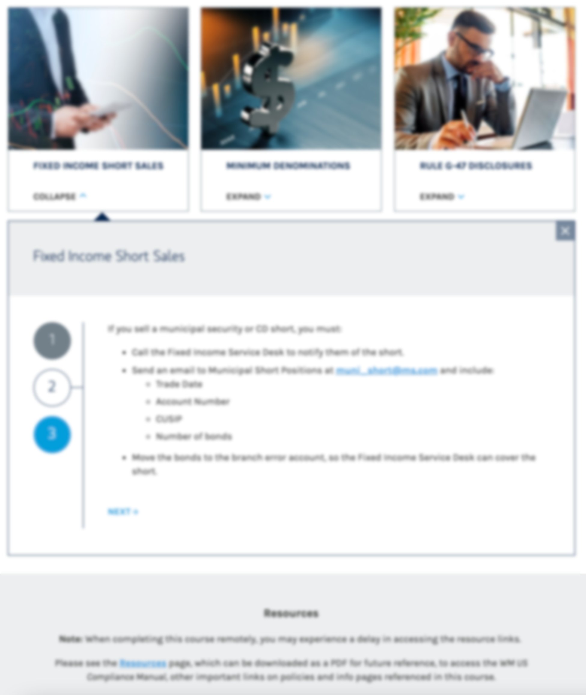

Annual Compliance Meeting
Note: Images are blurred to comply with Allen Communication's client confidentiality agreement.
I designed and built five versions of Morgan Stanley’s compliance course to educate their financial advisors, supervisors, home-based employees, and international advisors on the laws and company regulations they needed to be aware of and to follow to be compliant in their business practice.
After managing the Morgan Stanley Financial Advisors account for over a year, I was given the responsibility of Morgan Stanley’s Compliance Training account as well. The Annual Compliance Meeting (ACM) course is a five-course bundle taken by 25,000 Morgan Stanley employees every year to maintain their Financial Advisory Licenses and keep them informed on the policies and procedures germane to their practice and specific to their locale. The ACM course is for Morgan Stanley’s Financial Advisors, Private Wealth Advisors, and Registered Client Service Associates.
The design of the course had to balance between the need to be updated to be visually appealing and have a modern web-based layout, while also being easy to navigate for Morgan Stanley’s audience, the vast majority of which was not technologically literate.
My process for developing this course addressed two categories of work that, if ignored or done poorly, would create a world of trouble. The two categories were:
These habits were critical to maintain because of Morgan Stanley’s process of delivering SME feedback and the tight deadlines that are part and parcel to the finance industry as a whole and to which Morgan Stanley is no exception. We would often receive edits that would normally take 5 to 10 business days to incorporate and send back to the client for approval but were expected to return within 3 business days. We would receive new edits every 3-4 business days, all with the same expectation. Frequently, the feedback would be contradictory and unfeasible due to budget or time constrictions. By maintaining quality records and managing a coordinated effort with our graphic design, video production, and programming teams to meet tight deadlines, I was able to communicate and negotiate changes in the course to produce higher quality outcomes.
This course had an important business impact for both the client and my employer, Allen Communications. For Allen Communications, the quality of work I provided for the client persuaded them to stay on as a recurring client and remain one of Allen Communication’s most reliable sources of revenue—an outcome that was not guaranteed due to unsatisfactory past iterations of the ACM course. The impact for the client was that the course launched on time despite a much earlier deadline, and was so positively received by Morgan Stanley and their learners that it became the company’s standard for their compliance trainings.
As a member of the Morgan Stanley team wrote to Allen Communications:
‘The WM Compliance ACM is the most requested program at the Firm by regulators and outside counsel.’ -Millie Guzman, Compliance Team, Morgan Stanley